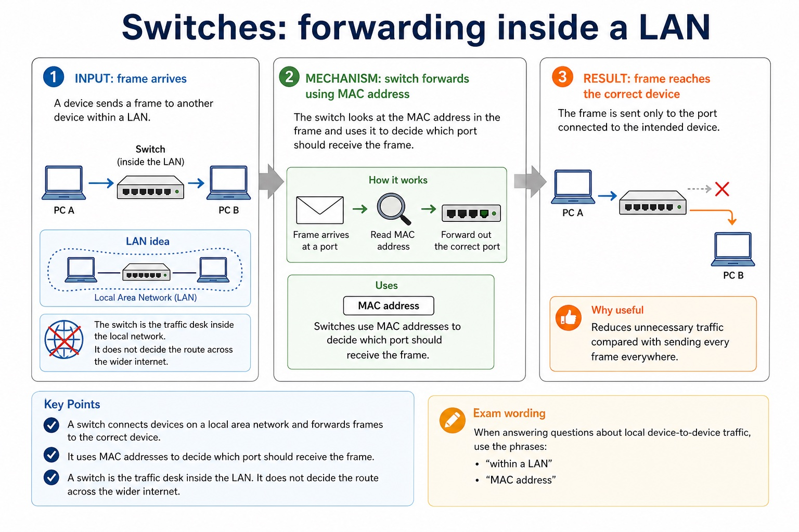
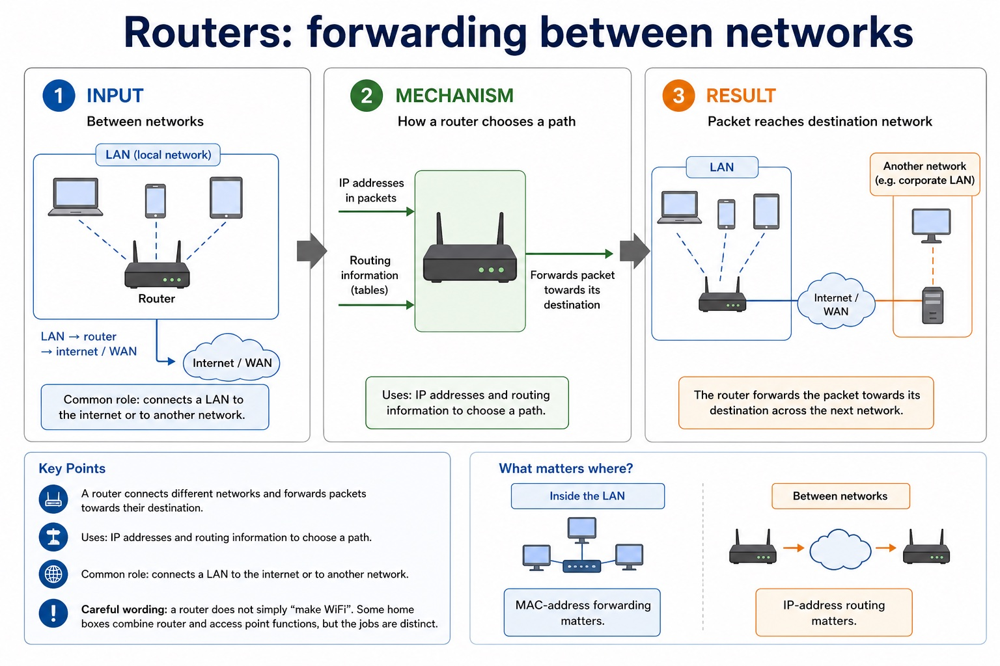

Cambridge AS9618 | Paper 1 | Section 2: Communication
LAN hardware, routers and Ethernet
Flexible-depth lesson
LAN hardware, routers and Ethernet
S2.09, S2.10, S2.11 | Visual relationships, mechanisms and worked examples.
Quickdiagnose + essentials
Fullcomplete explanation
Deepprerequisites + extension
Choosepractice by need
Teacher choice
Choose the depth for this group
Quick route
Use the diagnostic, learning objectives, first worked example and foundation question. Stop once the learner can explain the central distinction accurately.
Full route
Teach every knowledge-point material set, the worked method and all lesson questions.
Deep route
Add the prerequisite refresher, ask learners to connect the concept checklist, discuss the labelled extension and complete a transfer question without a model answer.
Part 1 | optional depth
Prerequisite knowledge and quick diagnostic
Recall S2.01 before starting this lesson.
Give one accurate definition or method step before continuing. If it is missing, revisit only that prerequisite.
Open optional prerequisite refresher
A LAN covers a limited area and is normally managed by one organisation; a WAN connects sites across a large area and commonly uses provider infrastructure. Benefits must identify a shared or centrally managed resource and its consequence.
Show understanding of the purpose and benefits of networking devices and the characteristics of LANs and WANs.
Part 2 | visual explanation
Learn each point through visuals
Use the relationship map, mechanism and concrete cue before opening precise wording.
01
S2.09 · process
LAN hardware: switch, server, NIC, WNIC, WAP, cables, bridge and repeater
Concept relationships
NICLAN hardware includes a switch, server, NIC/WNIC, WAP,…
LAN hardware includes a switch, server, NIC/WNIC, WAP, cables, bridge and repeater.
Execute
Apply one complete operation
Switch, server, NIC, WNIC, WAP, cables, bridge and repeater.
Test
Trace state and boundaries
A switch forwards frames within a LAN, a bridge connects LAN segments, a repeater regenerates a weakened signal,…
S2.09 diagrams
01
Diagram · 1 of 1
Switches: forwarding inside a LAN

Open text transcript
A switch connects devices on a local area network and forwards frames to the correct device.
Uses: MAC addresses to decide which port should receive the frame.
Why useful: reduces unnecessary traffic compared with sending every frame everywhere.
Exam wording: say "within a LAN" and "MAC address" when the scenario is local device-to-device traffic.
LAN idea
PC A - switch - PC B
The switch is the traffic desk inside the local network. It does not decide the route across the wider internet.
Open precise syllabus wording
Describe LAN hardware: switch, server, NIC, WNIC, WAP, cables, bridge and repeater.
Every named hardware category is required and must be distinguished by its role; a combined consumer device does not merge the logical functions.
02
S2.10 · process
The role and function of a router in a network
Concept relationships
forwards packetsA router connects different networks and forwards packets…
routing informationIP addresses and routing information to choose a…
different networksThe role and function of a router in…
routerInternet hardware includes routers and transmission links that…
IP addressesBetween networks, IP-address routing matters.
See how it works
Plan
Translate the stated design
A router connects different networks and forwards packets using destination IP addresses and routing information
Execute
Apply one complete operation
A router connects different networks and forwards packets using destination IP addresses and stored routing information.
Test
Trace state and boundaries
A router connects different networks and forwards packets towards their destination.
S2.10 diagrams
01
Diagram · 1 of 1
Routers: forwarding between networks

Open text transcript
A router connects different networks and forwards packets towards their destination.
Uses: IP addresses and routing information to choose a path.
Common role: connects a LAN to the internet or to another network.
Careful wording: a router does not simply "make WiFi". Some home boxes combine router and access point functions, but the jobs are distinct.
Between networks
LAN - router - internet / WAN
Inside the LAN, MAC-address forwarding matters. Between networks, IP-address routing matters.
Open precise syllabus wording
Describe the role and function of a router in a network.
A router connects different networks and forwards packets using destination IP addresses and routing information; providing WiFi is not the defining role.
03
S2.11 · process
Ethernet and how collisions are detected and handled using CSMA/CD
Concept relationships
Carrier SenseCSMA/CD means Carrier Sense Multiple Access with Collision…
random backoffA collision causes stop/jam, random backoff, sensing and…
collisionEthernet and how collisions are detected and handled…
EthernetAfter a collision, stations stop transmitting, send/recognise a…
CSMAIf idle it transmits, while continuing to detect…
retryCollision detection occurs after transmission begins.
See how it works
Input
Identify incoming data or signal
Ethernet and how collisions are detected and handled using CSMA/CD.
Mechanism
Follow the physical or logical path
A collision causes stop/jam, random backoff, sensing and retry.
Result
Connect output to its use
CSMA/CD means Carrier Sense Multiple Access with Collision Detection.
Open precise syllabus wording
Show understanding of Ethernet and how collisions are detected and handled using CSMA/CD.
Carrier sensing occurs before transmission; collision detection occurs after transmission begins. A collision causes stop/jam, random backoff, sensing and retry.
Open precise terminology and exam facts
Every named hardware category is required and must be distinguished by its role; a combined consumer device does not merge the logical functions.
A router connects different networks and forwards packets using destination IP addresses and routing information; providing WiFi is not the defining role.
Carrier sensing occurs before transmission; collision detection occurs after transmission begins. A collision causes stop/jam, random backoff, sensing and retry.
LAN hardware includes a switch, server, NIC/WNIC, WAP, cables, bridge and repeater. A server provides network services. A NIC/WNIC connects a device by cable or wirelessly; a WAP connects wireless devices to a wired LAN. A switch forwards frames within a LAN, a bridge connects LAN segments, a repeater regenerates a weakened signal, and cables carry signals.
A router connects different networks and forwards packets using destination IP addresses and stored routing information. It is not a replacement name for a switch: the two devices make forwarding decisions at different scopes.
CSMA/CD means Carrier Sense Multiple Access with Collision Detection. A station listens to the shared medium; if idle it transmits, while continuing to detect a collision.
After a collision, stations stop transmitting, send/recognise a jam signal, wait for different random backoff periods and retry. The random delay reduces the chance of another simultaneous attempt.
A URL locates a WWW resource: DNS resolves the domain to an IP address, while the remaining URL components identify the required resource.
Bit streaming delivers media progressively so playback can begin before the whole file arrives. Real-time streaming carries a live event with minimal delay; on-demand streaming sends stored content selected by the user.
Bit rate is the number of bits transmitted each second. Available broadband speed must normally exceed the media bit rate and absorb variation; otherwise the player buffers, lowers quality or pauses. A buffer stores arriving data temporarily.
The internet is the global network infrastructure that interconnects networks and carries many services. The World Wide Web is one service that uses the internet to provide linked resources accessed with web protocols and browsers.
Internet hardware includes routers and transmission links that forward data between networks. Web servers store or generate web resources, while clients request those resources; the WWW is therefore not a synonym for all internet services.
Worked method
Trace a school request
Two stations sense an idle cable
6 Mbit/s video on 4 Mbit/s link
Separate infrastructure from service
Locate one resource on a school web server
Part 3 | select by learner need
Practice by question type
explainexplainfoundation8 marks
Question 1. Explain the roles of a NIC, wireless access point, switch and router in a school LAN connected to the internet. Describe how CSMA/CD handles two devices attempting to transmit on a shared Ethernet medium. A video has a bit rate of 8 Mbit/s. Explain why a connection advertised as 8 Mbit/s may still pause during playback. Explain why the internet and the World Wide Web are not the same. Describe the hardware path used when a home computer accesses a remote server. Compare IPv4 with IPv6, then explain how a URL and DNS are used to request a web resource.
Show answer and marking guidance
Answer: NIC role; access-point role; switch role; router role; each device listens/senses the carrier before transmitting; transmits when the medium is idle; detects a collision and stops transmission; waits a random/backoff time before retrying; video requires about 8 million bits each second; actual available speed may be below advertised/maximum speed; other traffic, overhead or variation reduces throughput; buffer empties when data arrives more slowly than playback consumes it; internet infrastructure; WWW service; example or hardware path distinguishes them; end-device interface; LAN device; router role; modem/access-link role; IPv4 uses 32-bit addresses; IPv6 uses 128-bit addresses / provides a much larger address space; URL identifies a WWW resource and includes a domain plus resource path; DNS resolves the domain name to an IP address; IP address is used to route packets while the path identifies the requested resource
Marking guidance: Do not describe every named device as routing packets between networks. Do not accept collision avoidance: CSMA/CD detects and responds to a collision after transmission has begun. Do not accept 'bandwidth is slow' without comparing arrival rate with the stream bit rate. Do not define the internet as a collection of webpages. Do not use modem, router and switch as interchangeable terms. Do not accept that a private IP address guarantees security or that DNS converts the entire URL/stores the website.
Common error: For the command word explain, perform that exact action; do not replace it with an unrelated fact.
applyrecallapplication2 marks
Question 2. What is sensed before Ethernet transmission?
Show answer and marking guidance
Answer: Whether the shared carrier/medium is idle.
Marking guidance: Award one mark for each distinct, technically accurate point or method step.
Common error: Do not repeat the same point in different words; each mark needs a separate idea or method step.
applyrecalltransfer2 marks
Question 3. What does the router do at the LAN boundary?
Show answer and marking guidance
Answer: It forwards packets between the LAN and other networks.
Marking guidance: Award one mark for each distinct, technically accurate point or method step.
Common error: Do not copy the worked example unchanged; transfer the method and check it against the new context.
Related past-paper indexes
Reference
Marks
Command word
Question type
9618/12/W/25 Q5(a)
2
describe
explain
9618/12/S/24 Q3(i)
2
describe
explain
9618/13/S/24 Q6(i)
2
define
recall
9618/11/W/23 Q2(a)
3
describe
explain
Index only: Cambridge question and mark-scheme wording is not reproduced on this public course page.
Part 4 | close when ready
Summary and exam reminders
Summary
Define lan hardware, routers and ethernet with the exact technical vocabulary expected by the syllabus.
Use the lesson method on a fresh context and show the intermediate decision, representation or calculation.
Match the shape of the answer to the command word and the available marks.
Check the final answer against the scenario instead of repeating a memorised sentence.
Common error to correct
Students often confuse bandwidth with speed in every sense. Correction: bandwidth is capacity; latency and congestion also affect perceived performance.
Exam technique
Follow the command word: state gives a fact; explain links a cause to a consequence; compare covers both sides.
Match the number of independent points or method steps to the available marks.
For lan hardware, routers and ethernet, use the exact technical term before applying it to the scenario.